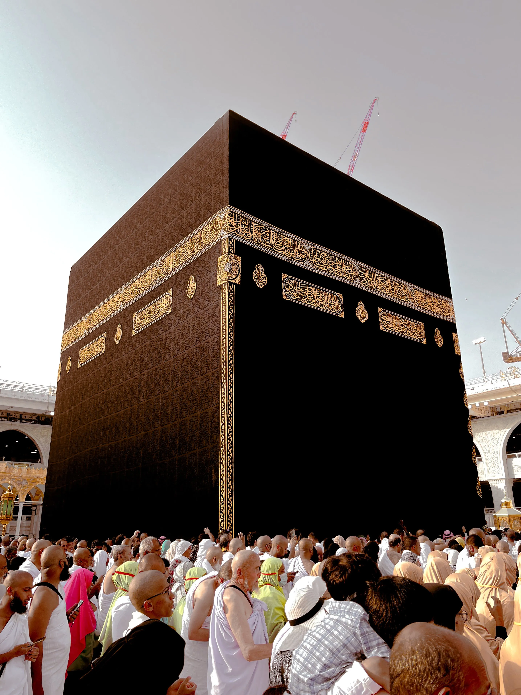

MATERI 05
Syariah Islam — Konsep & Sumber Hukum
01. Konsep Dasar Syariah
Secara etimologis, syariah berasal dari kata Asy-Syir'ah yang bermakna jalan menuju sumber air atau kehidupan. Syariah diposisikan sebagai perisai dan sistem navigasi (Maqashid Syariah), bukan sebagai belenggu yang membatasi kehidupan manusia.
02. Tiga Unsur Utama Syariah
- I'tiqadiyah: Akidah yang berfungsi sebagai fondasi utama.
- Amaliyah: Fikih yang menjadi struktur penyangga atau aturan praktis dalam kehidupan.
- Akhlak: Hasil atau buah yang tercermin melalui perilaku manusia dalam bermasyarakat.
03. Sumber Hukum Syariah
- Al-Qur'an: Menjadi sumber utama syariah yang orisinalitasnya terjaga.
- Hadis/Sunnah: Menjadi sumber hukum kedua setelah Al-Qur'an (dijaga melalui disiplin ilmu sanad dan matan).

SYARIAH ISLAM

FONDASI KEYAKINAN
MATERI 06
Fondasi Keyakinan Seorang Mukmin
6.1 Konsep Akidah
Berasal dari kata Al-'Aqdu yang berarti simpul atau pengikat.
- Tauqifiyah: Akidah bersifat eksklusif dan bersumber dari wahyu.
- Ghaibiyah: Kewajiban mempercayai hal-hal yang bersifat gaib.
- Syumuliyah: Mencakup seluruh aspek kehidupan manusia.
6.2 Hakikat Iman
- Tashdiq bi al-Qalb: Dibenarkan dalam hati.
- Iqrar bi al-Lisan: Diikrarkan atau dinyatakan dengan lisan.
- 'Amal bi al-Arkan: Dibuktikan melalui perbuatan fisik (bersifat fluktuatif/Yazidu wa Yankush).
6.3 Tauhid dan Klasifikasi Ibadah
Tauhid dapat dipahami secara logis melalui hukum kausalitas dan An-Nizam (keteraturan alam semesta). Terbagi menjadi:
- Ibadah Mahdhah: Ritual murni yang tata caranya telah ditentukan.
- Ibadah Ghairu Mahdhah: Aktivitas muamalah/keseharian yang bernilai ibadah jika diniatkan dengan benar.